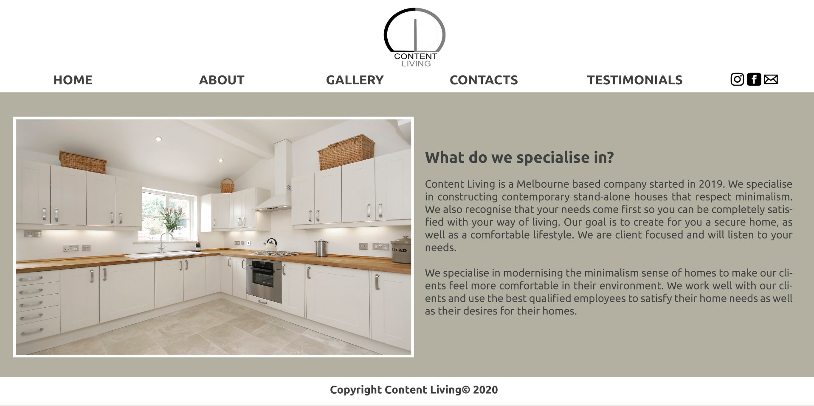
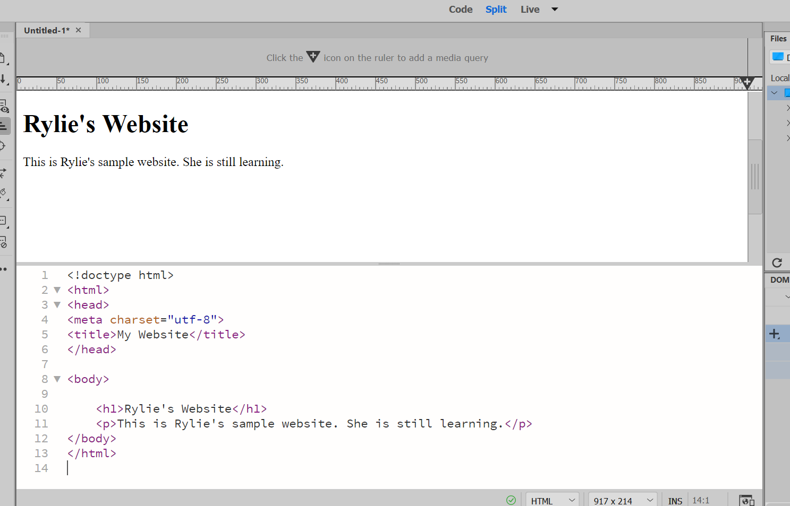
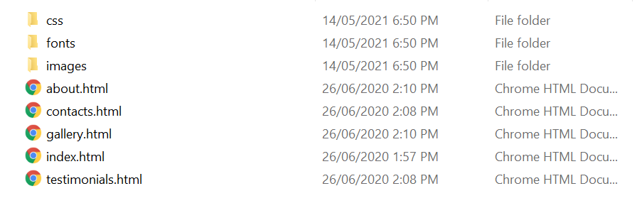

For my website design and coding assesment, I was given two 'clients' to choose from. Each client had their own idea of what they wanted their website to be about and what images/logo to feature on the website. I chose 'Content Living', a building company which specialises in modern houses.


Sitemap and Wireframe: A sitemap is where you draw a sort of tree which connects each page on a website to another. It visualises what buttons lead to the next pages. A wireframe is a rough sketch of the appearance of a website. both of these were necessary for me to get a good idea and visual understanding on what to include on my website.

Final Design: This is where I digitally draw what I want my website to look like. This would include the images, the colours, the fonts, everything I wanted to include on my website is right here as a visual. This definitely helped me when it came to Adobe Dreamweaver, as all I needed to do was code this!

HTML and CSS: Once I had my complete plan for my website, it was time to begin working on Adobe Dreamweaver, where I would (slowly but surely) learn how to write HTML and CSS. Through Dreameaver, and after many hours of frustration, I'd completed the Content Living website!
